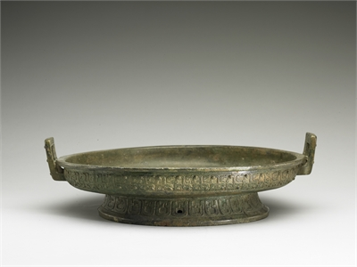

器形功能與種類
青銅器在夏朝時出現，樣式較簡單、樸素，有明顯的仿陶器特徵，出現酒器和食器。
大型青銅容器則在商代早期開始普遍出現，多用於祭祀或酒具。而到了商代晚期、西周初期，則多用為禮器或紀念，所以出現長篇銘文，比如歌頌周王美德或貴族功績、婚嫁等，另外青銅工藝由精麗轉為厚重，食器大量出現，酒器逐漸消失，且列鼎和編鐘制度確立。
春秋中期以後列國割據，禮器大多為各國貴族所使用，長篇歌功頌德記事體銘文逐漸減少，重點為出現較注重實用的器形貼近人們日常生活，種類大概為食器、酒器和水器。雖然如此，許多器物仍有著禮器的功能，例如鼎。

祖丁鼎 西元前1300-77
故宮現存最重最大的鼎，莊重雄偉，立雕獸面紋
銘文的首字 「倗」代表作器者的家族徽號

盤虺紋盤 西元前770-476
春秋時期極盛形，由部分銘文記載可知多與陪媵有關
驗證當時女性媵嫁與盥禮之盛行